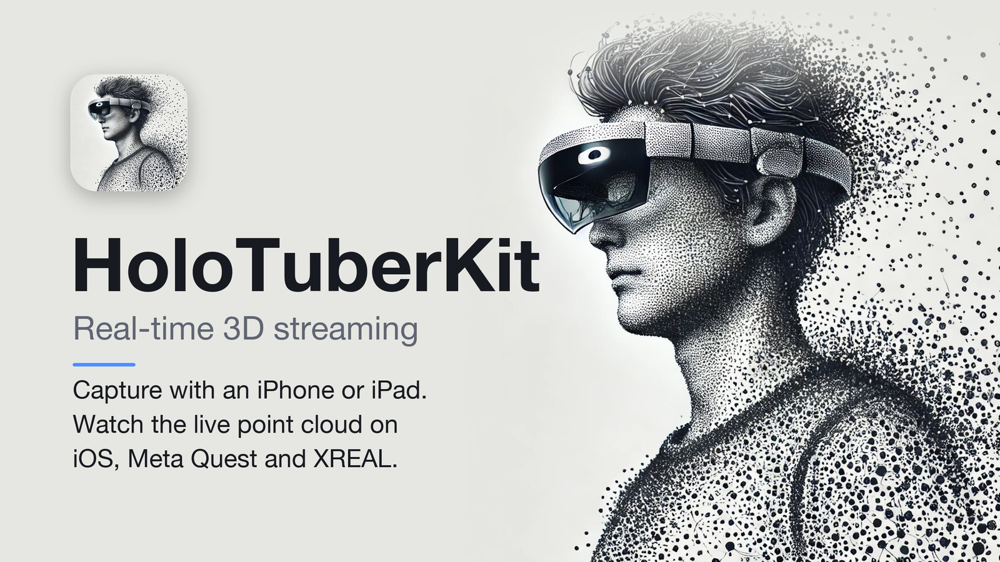
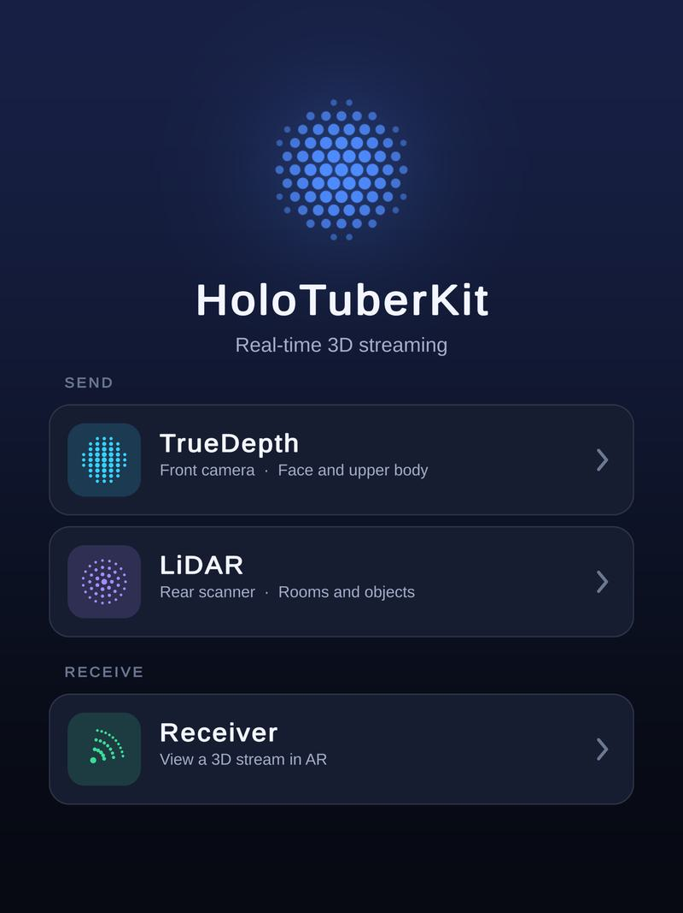
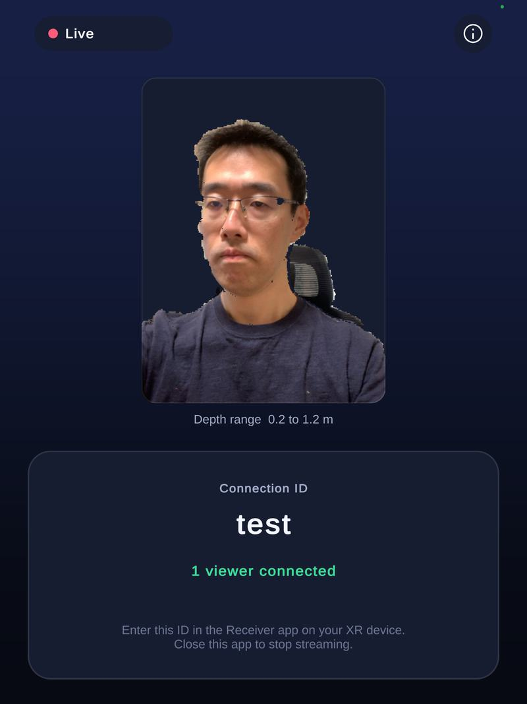
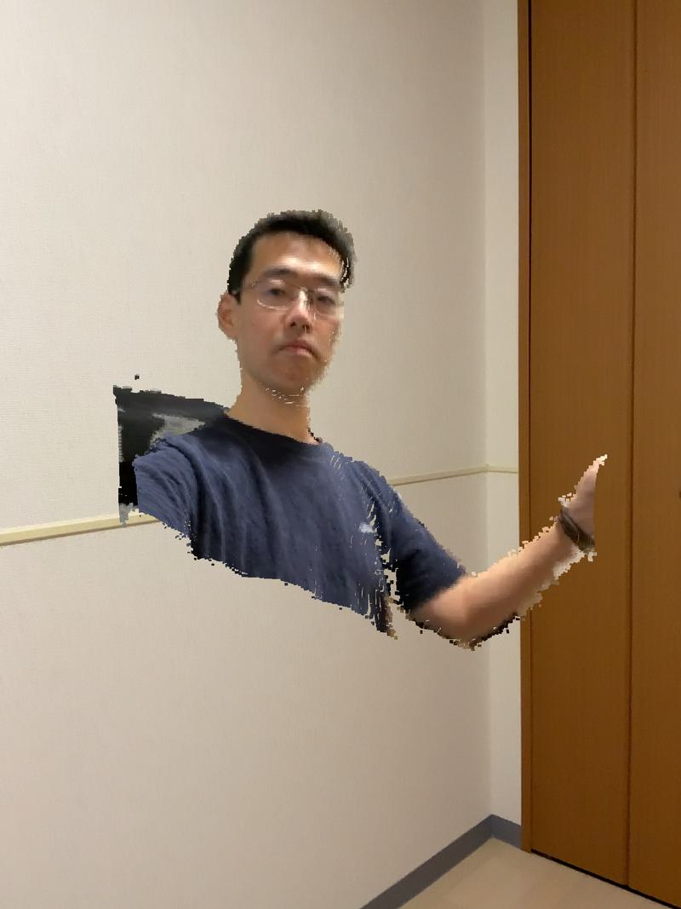
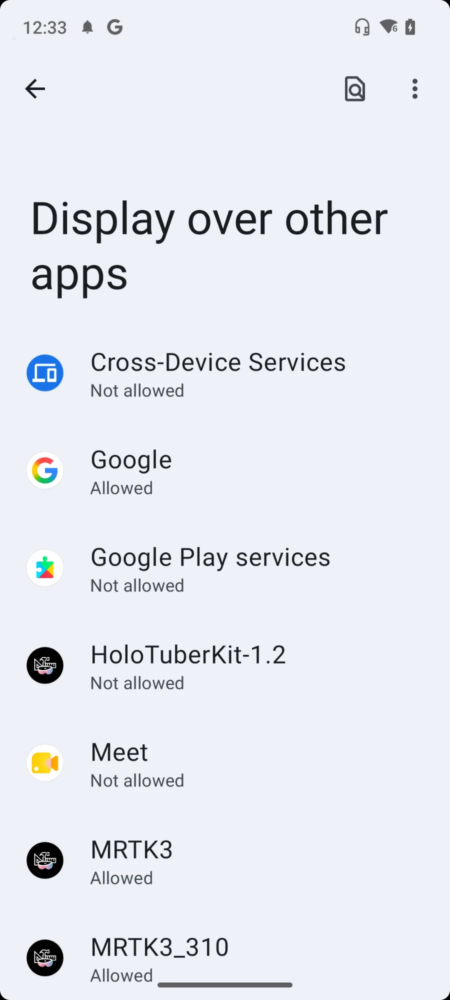
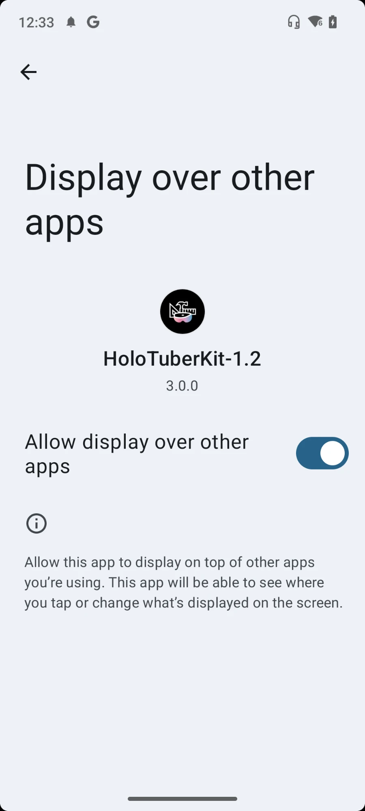
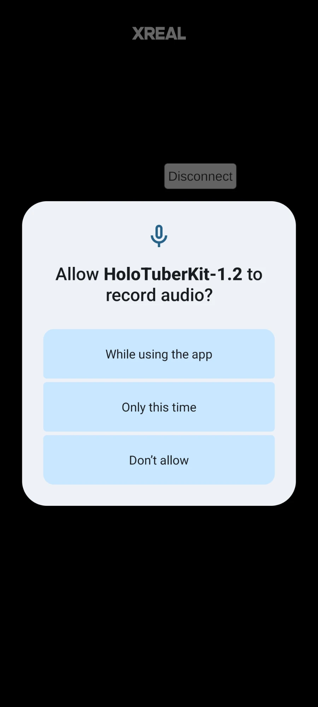

Real-time 3D streaming
Share your world.
Live, in 3D.
Use your iPhone or iPad to stream yourself, an object or the space around you. Viewers see the live capture in their own space, and can move around it to see it from different angles.
Send from iPhone / iPad. View on iOS, Meta Quest or XREAL.

From a camera to your space.
See what a live 3D capture looks like in HoloTuberKit.
Share yourself or your surroundings.
Choose a camera to suit what you want to show. HoloTuberKit captures both color and depth, so viewers see a live 3D shape made of colored dots, called a point cloud.
Share yourself
Capture your face and upper body as you move. Viewers can place your live 3D capture in their space.
Requires an iPhone or iPad with a TrueDepth camera.
Show what’s around you
Point the rear camera at an object or part of a room to share its shape, color and movement in real time.
Requires an iPhone Pro or iPad Pro with a LiDAR scanner.
Each capture shows the surfaces visible to the camera.
One device captures. Others watch.
The sending device chooses a Connection ID. Viewers enter that same ID in their app to join the live stream. More than one viewer can connect at the same time.
Captures and streams in 3D
Display the live capture in your space
Both sides need an Internet connection. Anyone with the Connection ID can watch, so share it only with your intended viewers.
One device to send. Another to view.
You’ll need at least two devices. For example, send from an iPhone and view on a Meta Quest, or use a second iPhone or iPad to view in AR.
1. Install the iOS app on the sending device
Use an iPhone or iPad with TrueDepth or LiDAR. The iOS app below includes both sending and viewing.
2. Get the app for each viewing device
Choose from iPhone / iPad, Meta Quest or XREAL below.
iPhone / iPad
Use this app on the sending device, or on another iPhone or iPad to view the stream in AR. iOS 15 or later.
App StoreMeta Quest
View the live capture in mixed reality on Quest 2, Quest Pro, Quest 3 or Quest 3S.
Meta Quest (beta)XREAL Air 2 Ultra
View with XREAL Air 2 Ultra glasses connected to a Beam Pro. Install the APK on Beam Pro, then follow the first-time setup.
Download APKCheck your devices
| Role | Device |
|---|---|
| Sender (TrueDepth) | iPhone or iPad with a TrueDepth camera. iOS 15 or later. |
| Sender (LiDAR) | iPhone Pro / iPad Pro with a LiDAR scanner. iOS 15 or later. |
| Receiver: iOS | A device that supports ARKit. iOS 15 or later. |
| Receiver: Meta Quest | Quest 2, Quest Pro, Quest 3, Quest 3S. |
| Receiver: XREAL | XREAL Air 2 Ultra (hand tracking is used) with an XREAL Beam Pro. Other Android phones, such as Galaxy, are no longer supported. |
Ready? Follow the send and receive steps below to connect your devices.
Send and receive



1. Sender (iOS)
- Choose a camera.
Open HoloTuberKit and tap TrueDepth or LiDAR under SEND.
- Enter a Connection ID.
Use a unique ID. Take care not to use an ID that another user is already using.
- Tap Connect.
Capturing and streaming start. The screen shows how many viewers are connected. Close the app to stop streaming.
2. Receiver
Enter the same Connection ID and connect.
- iOS
Tap Receiver on the home screen, enter the ID and tap Connect.
- Meta Quest
Press Connect on the panel attached to your left controller. Type the ID in the window that appears, then press Connect again. Turn Manipulation on to move and rotate the point cloud: grab it with the controller ray, and tilt the thumbstick left or right to rotate it around the vertical axis.
- XREAL
Complete the first-time setup, enter the ID on the Beam Pro screen and tap Connect. Use your hands to move and scale the point cloud.
First-time setup
Only needed the first time you run the app.
-
Allow "Display over other apps".
After installing, launch the app. The Android settings screen for Display over other apps appears. Select HoloTuberKit, turn on Allow display over other apps, then press the back button.

Step 1: select the app 
Step 2: allow it, then go back -
Allow the microphone.
The first time the app starts, a permission dialog appears. Choose While using the app.

Step 3: allow audio recording
Troubleshooting
Connection error
In highly secure network environments (offices, schools, public Wi-Fi) the device's IP address cannot be obtained, and the point cloud cannot be streamed. Use tethering from a smartphone, or another network.
The receiver shows nothing
Check that the Connection ID is exactly the same on both sides, and that the sender app is still open and shows Live.